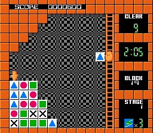
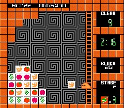

|


Review
Game Type: Puzzle
You control a cute little blob that tosses blocks bearing various
patterns at a pile of blocks on the opposite side of the screen. Each time
you toss a block it must plow through at least one block of the same type.
Once it strikes a block of a different type it will knock that block out of
the stack and back to the blob. If you get a block back that can't be used
on your next shot, it will count as a "miss", and you'll have to take one
of your limited supply of wild card blocks. Run out of wild cards and the
game is over.
Gameplay: 80/100
The NES is one of the few systems that was never blessed (cursed?) with
a port of the inexplicably addictive Zoop. Or is it? If this game weren't
so hard to find I'd be certain that Zoop's creators used Flipull as the
basis for their work. The idea of having pieces plow through targets that
match their color and swap with those they don't is almost identical.

Flipull is much slower paced than the 16-bit adrenaline-fest, though.
There's a time limit in the standard mode to keep the pressure on, but you'll
need to resist the temptation to sit back and start randomly destroying
stuff. You have to think ahead two or three moves or you won't last past the
first few stages. And the puzzle mode eliminates the time limit altogether
to give you much-needed time to strategize.
The controls consist of Up, Down, and the block launch button. No
confusion there. Not so with the bizarre set of rules, though. You'll have
to play several times to even begin to get the hang of wild cards, time limits,
slamming the blocks into walls and pipes to drop them from above, and more.
There's a lot more to know about this game than I can describe here. Once
you've figured out all its complexities Flipull can be quite addictive,
though.
Graphics: 70/100
If it weren't for the butt-ugly colors used for the blocks and backgrounds
I might like the graphics - nay, the entire game - even better. Colors aside,
though, the game looks pretty good. Your little blob is well-animated, and the
cool background patterns change with each stage. The PacManesque cinemas you
see every ten stages are a nice touch.
Sound: 70/100
The tunes are cute but they loop a little too soon, and are re-used every
three or four stages. Ditto for the sound effects; they're cute but if you
hear them too often they can get annoying. Put a CD on the stereo instead.
(Preferably something relaxing for when the game pisses you off.)
Overall: 80/100
The creator of this game has to be a genius. So does anyone who hopes
to play it well. Flipull is too complex for players weaned on Tetris Attack
and Puzzle Fighter. If you don't mind slower puzzlers, though, this can get
quite addictive. No matter how many times you fail, you'll find yourself
playing "just one more game". (I once played until 4 a.m. in this fashion.)
If you're one of those masochists who doesn't passionately hate Lode
Runner et al, this is for you.
|